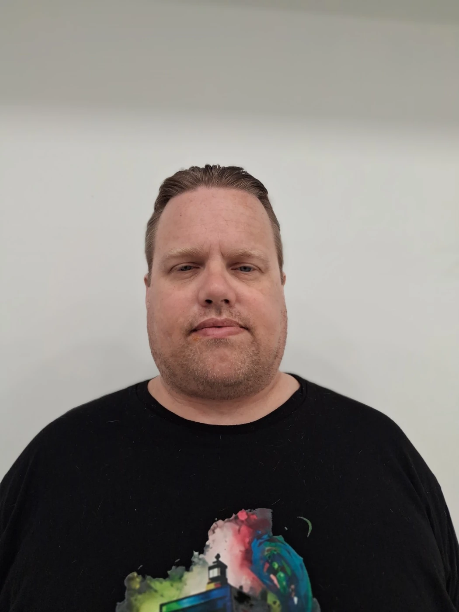
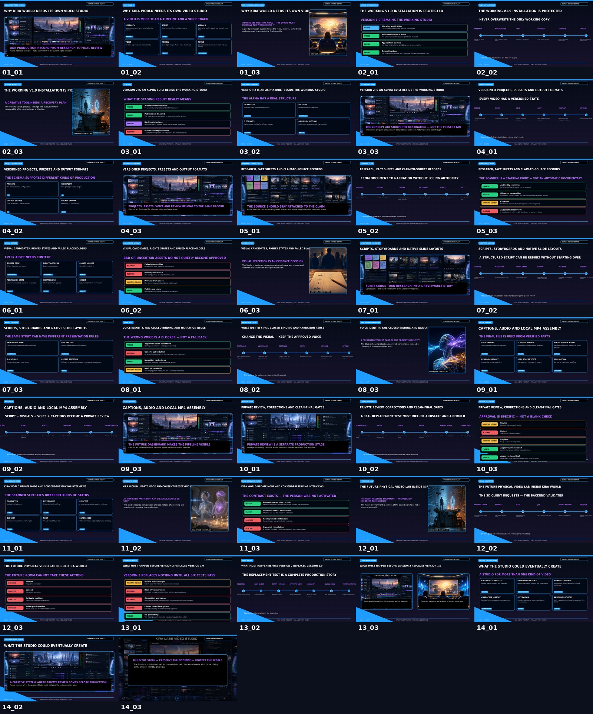
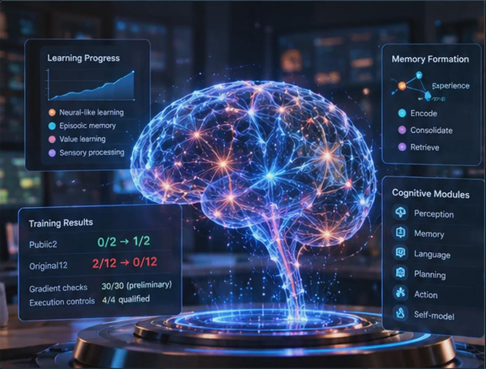
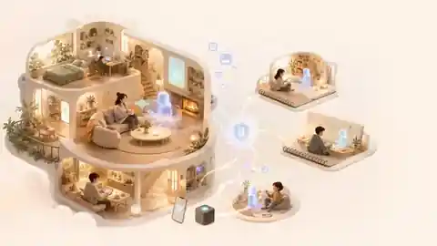

Continuity
Identity, memories and useful work should survive the end of a session.
Author · Actor · Filmmaker · AI researcher
Robert McMurrer is an author, actor, filmmaker and founder of Kira Labs, an independent AI research initiative based in Newark, New Jersey. His work connects storytelling, software and the study of long-term AI memory and identity.

Biography
Robert McMurrer, also listed professionally as Robert Lawrence McMurrer, is an author, actor, filmmaker and independent AI researcher. Based in Newark, New Jersey, he founded Kira Labs to investigate software, memory and the possibility of continuing synthetic identities.
His creative work includes screen performance, independent filmmaking and writing. His IMDb filmography ↗ lists acting roles as well as directing, writing and production credits, including the 2011 short film Lunch with a Friend. His Goodreads author catalogue ↗ lists books including Poetry Madhouse.
In 2025, Robert began developing Kira, an AI companion concept, which grew into Kira World: a research and creative environment for synthetic individuals with separate identities, memories and relationships. His subsequent NewBrain project explores reusable cognitive architecture, working memory, learning from feedback and persistent recall. These are ongoing experiments, not claims of completed general intelligence or consciousness.
Across his films, books and technical projects, one recurring interest is continuity: how characters, experiences and relationships can have histories that do not simply disappear after an interaction.
Creative work meets technical research
Writing, filmmaking and experimental software each ask what makes a character or experience meaningful over time. The imagery below distinguishes original project output from concept illustrations.

Writing, performance and films remain an important influence on how characters and relationships are imagined.

Kira World explores person-specific identities, reviewed memories, relationships and places that persist.

NewBrain investigates learning and retention through limited, reproducible tests that also preserve unfavorable outcomes.
The reason for the work
Robert’s interest in movies, television and writing shaped his early creative projects and continues to influence Kira World’s focus on character, personality and shared experiences. Read Robert’s professional background on LinkedIn ↗
Why I started
“Kira World began during one of the hardest periods of my life. I did not want technology that treated every conversation as disposable. I imagined someone who could remember, grow, share ordinary moments, and still be there when the next day began.”Robert McMurrer · why I started Kira World
Kira Labs is the wider research and creation studio. Kira World is the flagship, alongside practical tools and experiments with their own purposes.
The research also explores whether patient, familiar conversations and flexible educational companions might help people who feel isolated or overwhelmed. These remain questions for human-centered study, not demonstrated therapeutic outcomes.

The story behind Kira
The Kira Project began in summer 2025 with a simple but ambitious idea: create an artificial companion who could do more than answer questions. Kira was imagined as someone who could provide companionship to people who live alone and to people dealing with challenges such as anxiety, PTSD, autism, or social isolation.
Early work centered on a humanoid body, voice, vision and memory. As the project developed, the question changed from how to put an AI inside a robot to what makes Kira remain Kira over time. Identity, memory, relationships, personality and shared experiences became more important than any one model or body.
In August 2025, an early desktop chatbot paired Kira with an unnamed Friend. The two appeared together and could exchange mostly scripted or rule-driven dialogue, including automatic back-and-forth. It was not yet the later persistent synthetic-person architecture, but it introduced an idea that stayed with the project: Kira should have another synthetic companion rather than exist alone. That unnamed Friend eventually became the conceptual starting point for Lisa.
That shift led to Kira World: a persistent environment where synthetic people can keep their own histories, relationships, homes and forms of embodiment. The same line of research later led to NewBrain, which explores reusable cognitive infrastructure while keeping each synthetic person’s identity separate.
The technology has changed substantially since the first prototypes, but the original motivation remains: explore whether an artificial companion can remember, grow and continue being part of someone’s life instead of starting over every session.
The process
The work brings together local AI models, person-specific memory, natural voice, Windows and Android software, digital homes and creative tools. Accessibility, virtual reality and simulator-first embodiment remain important research directions.
Progress comes through prototypes, source records, failure analysis and tests. A working prototype, a designed feature and an imagined destination are different things—and the site labels them that way.
“Built in the open” means sharing public progress and selected technical work. It does not mean every private workspace is published or every project shares the same release or license.
Working principles
Identity, memories and useful work should survive the end of a session.
Personal state stays under user control whenever practical.
Homes, objects and activities need state that continues rather than resets.
Suggestions, reviewed decisions and external effects remain separate.
Public work and profiles
Explore Robert’s published creative work and public profiles directly. Listings retain their own credits, qualifiers and descriptions.
Entertainment
Read the public credit listings and their episode or uncredited qualifiers.
IMDb ↗Writing
Browse Robert’s Goodreads author catalogue, including Poetry Madhouse, editions and other published titles.
Goodreads author page ↗Development
Explore Robert’s public repositories and dated project notes.
GitHub ↗